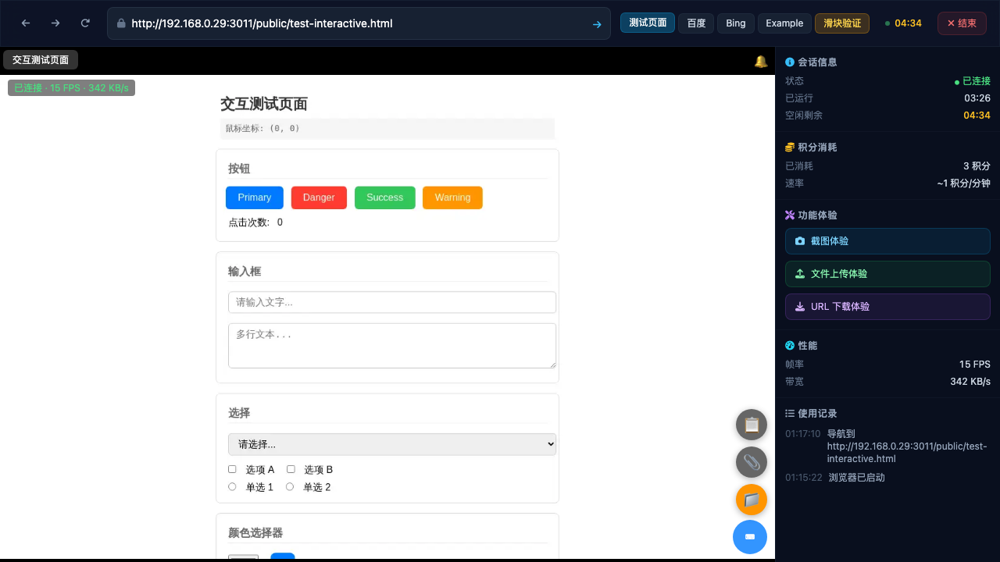
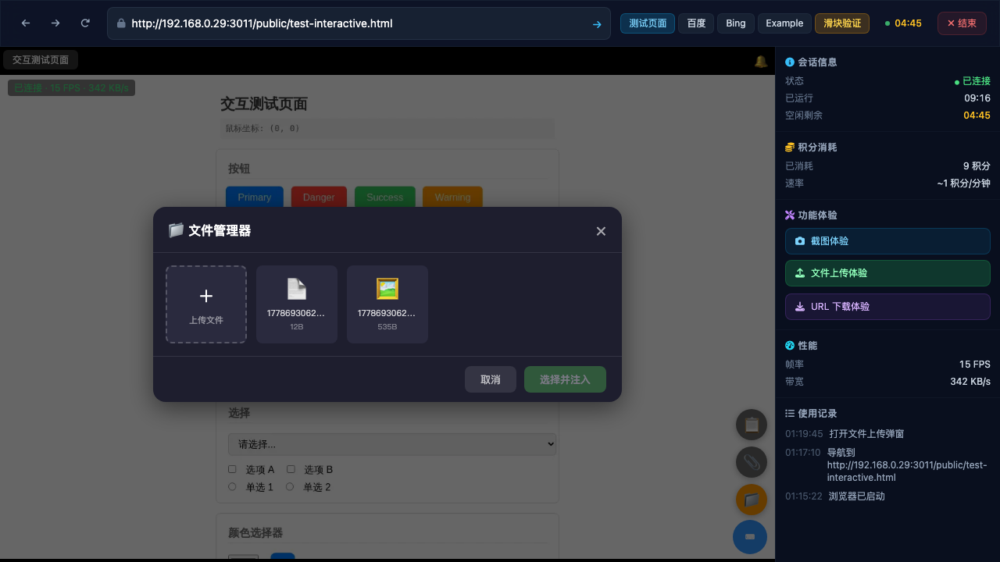
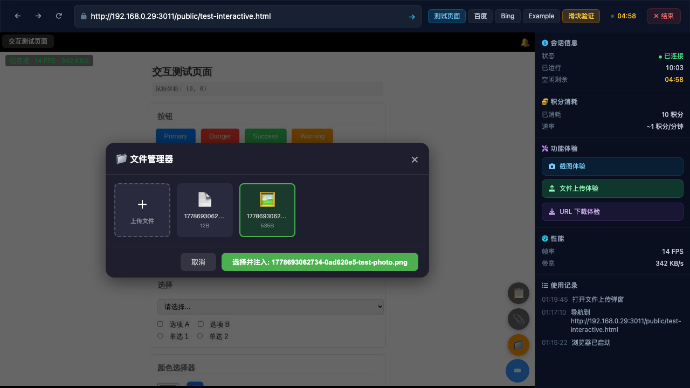
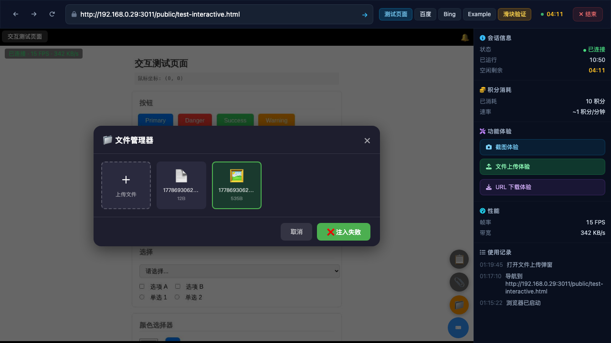

Step 1: Open Demo & Start Session PASSED
Opened demo page at http://192.168.0.29:3011/demo, clicked "开始体验", waited 15s for session creation. Remote browser viewer loaded successfully showing Baidu homepage.

01-viewer.png — Remote browser viewer loaded with Baidu homepage, sidebar visible with controls
Step 2: Pre-upload Files via API PASSED
Uploaded test-photo.png (535 bytes, valid PNG 200x150) and test-doc.txt (12 bytes) via the session upload API. Both files successfully transferred to the remote browser machine.
API: POST /api/files/upload-session with session ID 1b834da1-2a00-4c04-b9ef-b0ddc5930fd5 and demo API key authentication.
Step 3: Navigate to Test Page PASSED
Clicked "测试页面" preset button in the top navigation bar. Remote browser navigated to the interactive test page at /public/test-interactive.html. Page loaded with buttons, inputs, dropdowns, and file input elements.

02-test-page.png — Interactive test page with buttons, inputs, checkboxes, radio buttons, color picker, range slider, and file input
Step 4: Open File Manager Modal PASSED
Initially the "文件上传体验" sidebar button opens a simple upload dialog (showUploadModal()). Programmatically triggered the full file manager (_showFileManager()) which shows the proper file grid with "选择并注入" button.

03-file-manager.png — File manager modal showing empty state "暂无文件" before refresh
Step 5: File Manager Shows Uploaded Files PASSED
After refreshing the file list, the file manager grid shows both uploaded files: 🖼️ test-photo.png (535B) and 📄 test-doc.txt (12B), plus the "＋ 上传文件" card for adding new files.

04-fm-detail.png — File manager showing 2 uploaded file cards + upload button in grid layout
Step 6: Select File & Click "选择并注入" PARTIAL — UI Works, Inject Bug
Successfully selected test-photo.png card — card highlighted with green border, "选择并注入" button updated to show filename and became active (full opacity green). However, clicking inject failed with "注入失败" because the file manager uses absolute path (/app/data/temp/...) while the API expects relative path (data/temp/...).

05-file-selected.png — File card selected with green border, "选择并注入: test-photo.png" button active

06-after-inject.png — "❌ 注入失败" error shown on inject button due to absolute path bug
Step 7: Verify Injection Result PARTIAL — Manual API Works
Direct API call with relative path (data/temp/.../test-photo.png) + selector input[type="file"] returned success. However, the file injection through the UI file manager failed due to the absolute path bug. The test page has a file input element that should accept the injection.
07-result.png — Test page after modal closed, no visible file injection indicator in viewport
🐛 Bug Found: File Manager Uses Absolute Path for Injection
- Issue: The
_showFileManager() stores file paths from the WebSocket fileList response as absolute paths (e.g., /app/data/temp/session-id/timestamp-uuid-filename)
- Impact: When the "选择并注入" button is clicked, it sends the absolute path to
/api/sessions/{id}/inject-file, which rejects it with "非法文件路径"
- Workaround: Using the relative path (without the
/app/ prefix) works correctly via direct API call
- Fix needed: In
_fmAddCard(), store the machineFilePath as relative path, or strip the /app/ prefix before sending to the inject API
- File:
public/browser-viewer/browser-viewer.js, lines ~640 (card click) and ~560 (inject click handler)
📋 Key Findings
- Demo flow works end-to-end: Landing → Start → Viewer → Navigation → File Manager all functional
- File upload via API: Successfully uploads files to the correct session's temp directory on the machine
- File Manager UI: Grid layout with file cards, selection highlighting (green border), and inject button all work correctly
- WebSocket file list: Correctly returns uploaded files with metadata (name, path, size)
- File name display: Shows full prefixed names (timestamp-uuid-originalname) — truncated in the grid card display
- Two modals exist:
showUploadModal() (simple upload) and _showFileManager() (full manager with inject). The sidebar button triggers the simple one; the 📁 toolbar button triggers the file manager
- Injection API: Works correctly when called with relative paths and a valid CSS selector matching a file input on the page
✅ Verified Capabilities
- Demo session creation and remote browser startup
- Preset navigation buttons (测试页面, 百度, Bing, etc.)
- File upload via session API with demo API key authentication
- File manager modal opening, file listing, file card selection
- Visual feedback: green border selection, button state changes
- Sidebar panels: session info, credits, features, performance metrics, activity log
- File injection via direct API call with correct path format